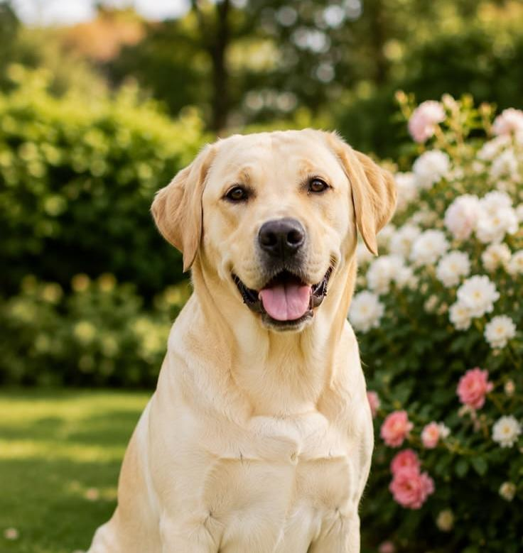
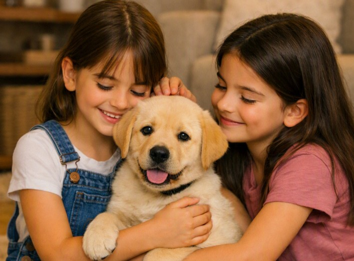

Labrador Retriever
Il Labrador Retriever è una delle razze canine più amate e popolari al mondo. Conosciuto per il suo carattere equilibrato, l'intelligenza vivace e l'infinita dolcezza, è il compagno ideale per famiglie, bambini e persone attive.
Originariamente selezionato come cane da riporto, adora l'acqua, il gioco e stare costantemente in compagnia del suo padrone.
Caratteristiche
Tempo e Routine

Ha bisogno di tempo quotidiano, gioco e attività fisica frequente.
Cura e Impegno
Mantello a pelo corto facile da gestire, ma perde pelo costantemente.
Valutazione dello spazio
Molto adattabile, ma necessita di sfogare l'energia quotidiana.
Maggiori informazioni
Tempo e Routine
Ha un livello di energia elevato e necessita di passeggiate quotidiane, giochi e attività all'aperto. Ama correre, riportare oggetti e soprattutto nuotare. Senza il giusto esercizio fisico e mentale rischia di annoiarsi.
Cura e Impegno
Il mantello è corto, denso e dotato di un sottopelo impermeabile: richiede spazzolate regolari per rimuovere il pelo morto, specialmente durante la muta. È una razza molto golosa, per cui serve un accurato controllo dell'apporto calorico.
Valutazione dello spazio
Si adatta benissimo a vivere in appartamento, a patto che gli vengano garantite uscite frequenti e momenti di movimento. Un giardino è l'ideale per farlo giocare, ma non sostituisce mai la vicinanza della sua famiglia.
Pro e Contro
✓ Per chi è ideale
- Carattere eccezionalmente socievole e affettuoso con tutti
- Bravissimo con i bambini e perfetto come primo cane
- Grande intelligenza e spiccata facilità d'addestramento
▲ Cosa tenere a mente
- Tendenza spiccata all'aumento di peso (necessita di dieta controllata)
- Richiede molta attività fisica per evitare che accumuli stress
- Forte perdita di pelo costante durante i cambi di stagione
Momenti ed espressioni



Palette di colori